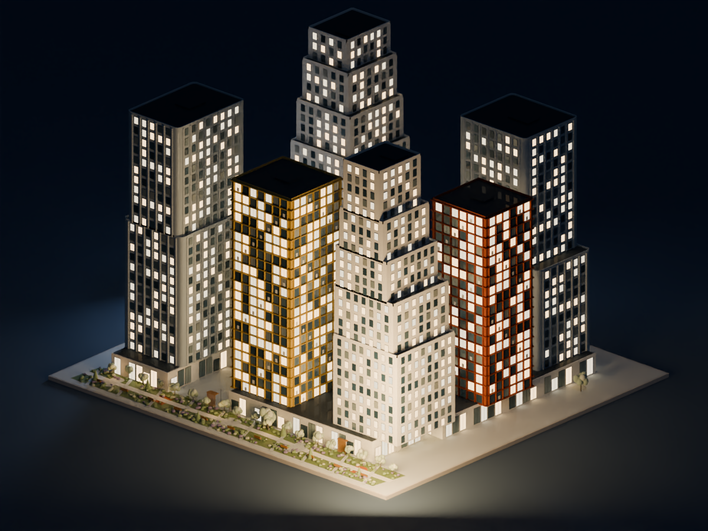
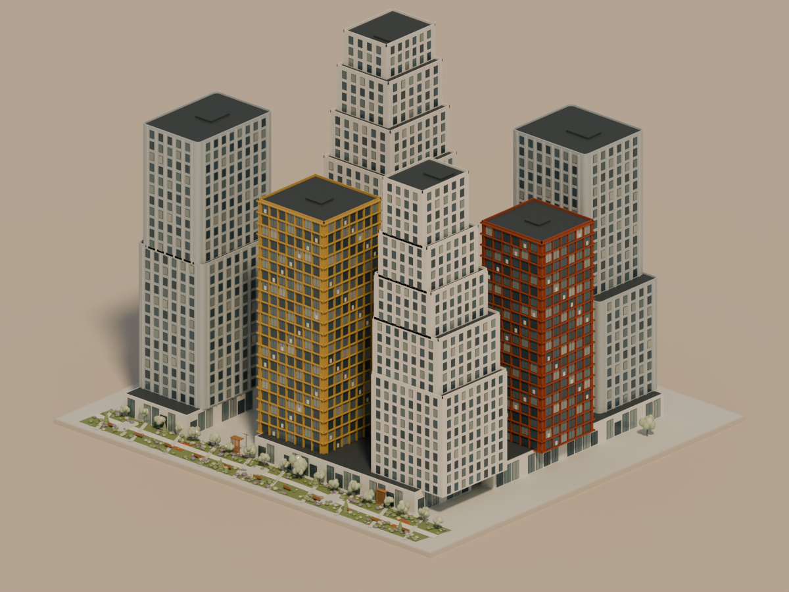
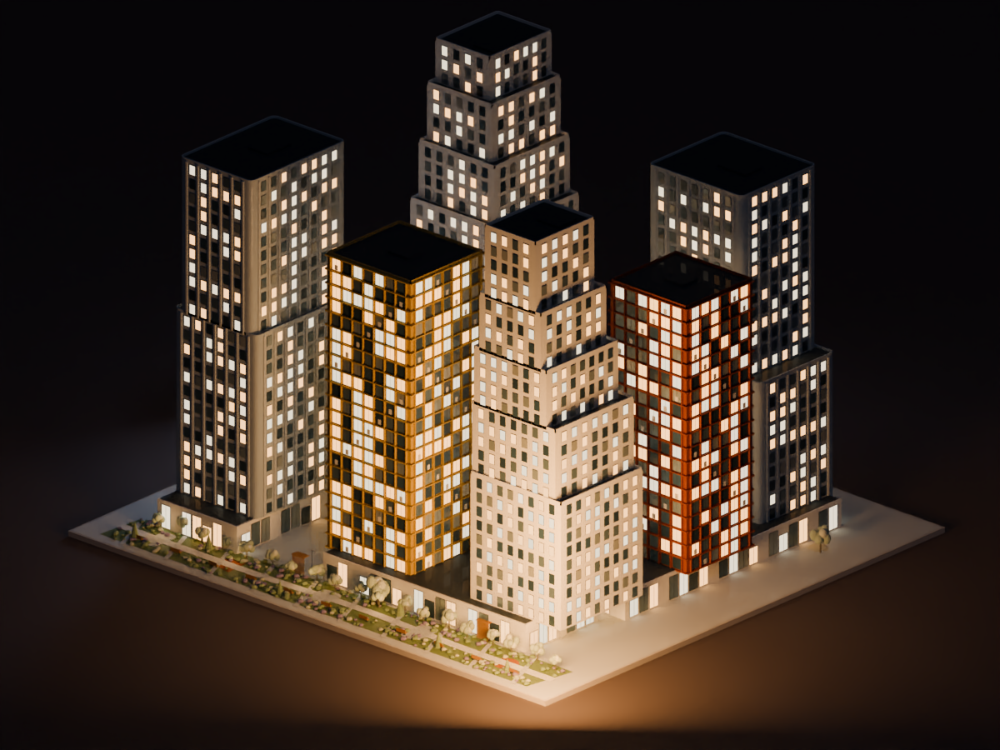
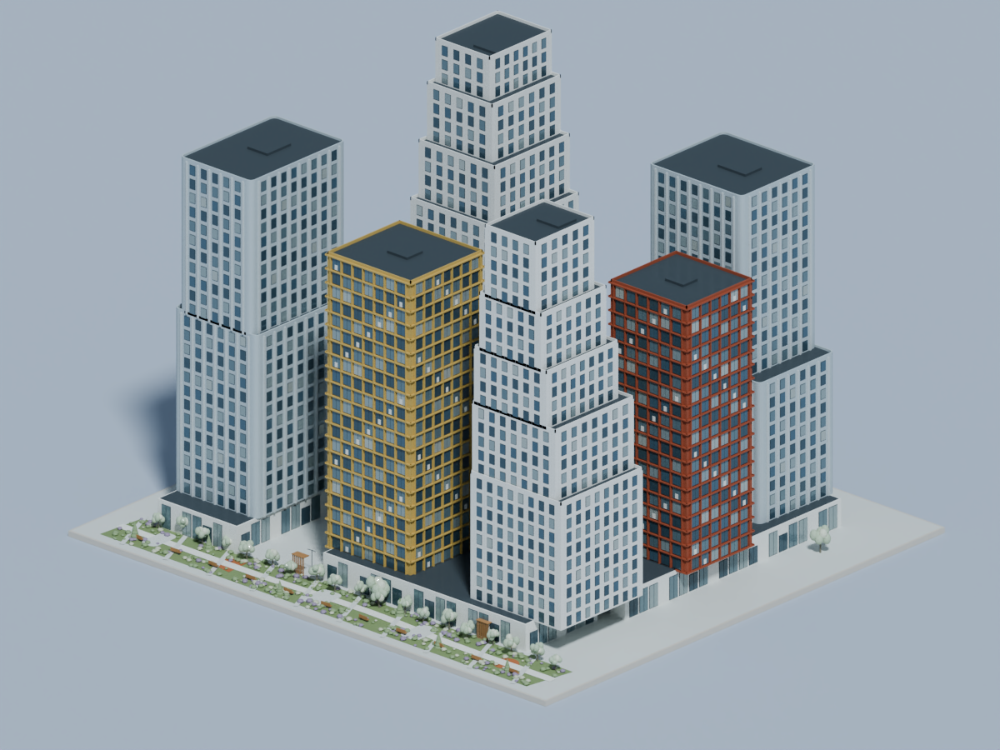
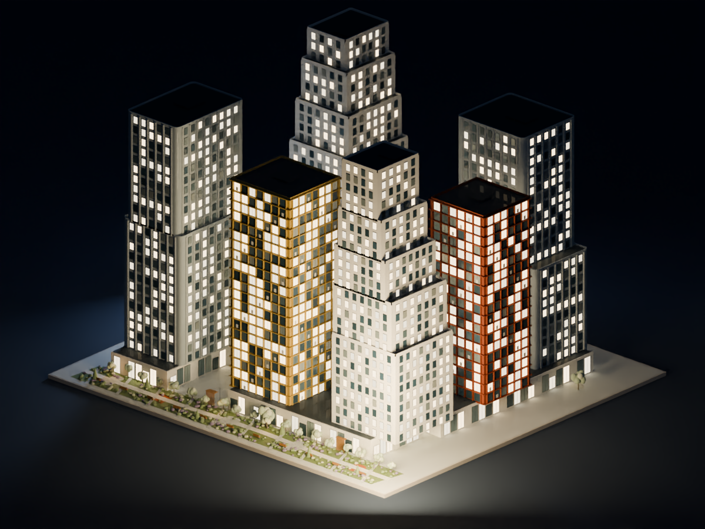
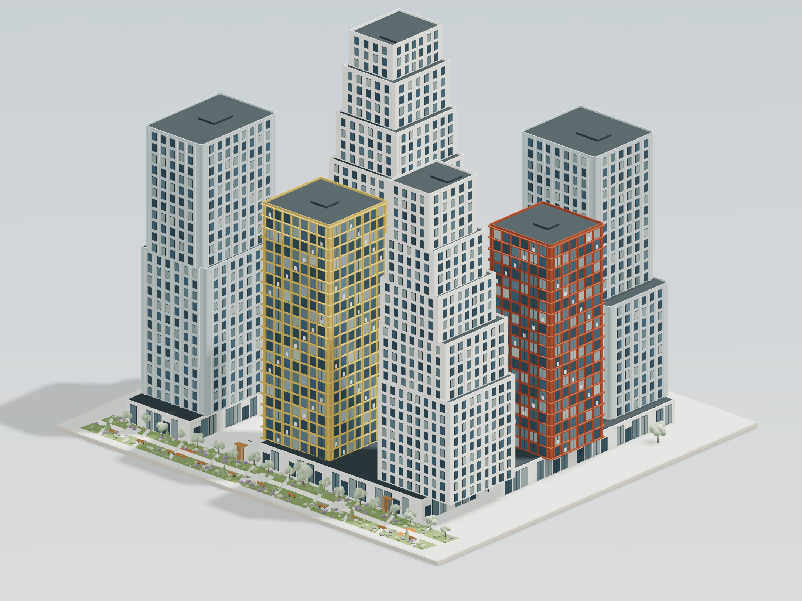
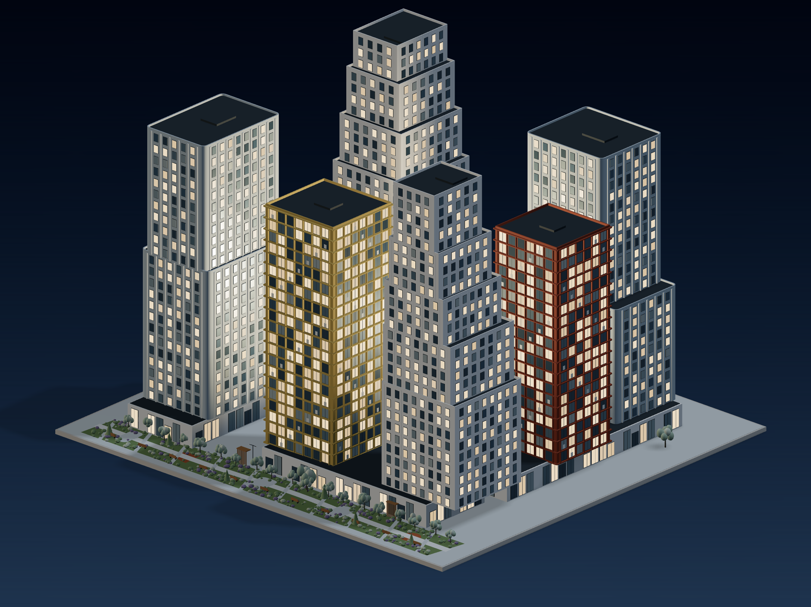

Три пары на геометрии существующего проекта. Физический расчёт света, отражения, индивидуальное включение окон.
Изображения ниже — концепции Blender, они не являются снимками сайта. Для сравнения браузерный результат приведён отдельно.
Сдержанная подача, нейтральный день и тёплая архитектурная подсветка ночью. Рекомендуемый баланс для ГРАНЬ.

Мягкий золотистый дневной свет и более янтарная ночная атмосфера.


Прохладный направленный день, глубокая ночь и усиленные световые акценты.


Тот же проект и направление камеры. Реализованы градиент фона, стекло и маска горящих окон по инстансам. Физические переотражения Cycles здесь не воспроизводятся.

